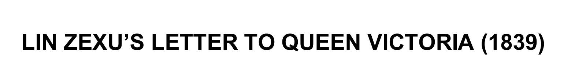
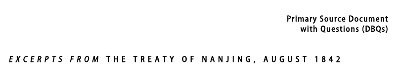

52:38 · 4 OPERE
La lettera di Lin Zexu alla regina Vittoria.
Il filo del discorso
La lettera indirizzata da Lin Zexu alla regina Vittoria nel1839 è letta come un appello alla responsabilità morale del commercio. Il relatore ne seleziona i passaggi che denunciano il profitto ricavato dalla vendita dell’oppio in Cina e chiedono reciprocità: ciò che si considera dannoso per il proprio popolo non dovrebbe essere imposto agli altri. Mette in rilievo anche la proposta di sostituire le coltivazioni di oppio con prodotti utili e la ricerca di una soluzione prima della punizione. Il percorso è preceduto da una lettura del faraone biblico come figura della cecità del potere e si allarga poi a diversi conflitti moderni. La scheda distingue il documento dalla interpretazione del relatore. La lettera contiene una argomentazione etica ma anche la retorica gerarchica della corte Qing e minacce di pena capitale,che il relatore stesso contesta. La domanda morale non rende automaticamente esatte tutte le informazioni del testo. Rimangono quindi distinti i fatti del commercio coloniale,la complessa trasmissione della lettera e le analogie contemporanee. Il ritorno di Hong Kong alla Cina avvenne nel1997; il ruolo di Palmerston,la ricezione da parte di Vittoria e le responsabilità negli episodi attuali non vengono dedotti dalle sole valutazioni del commento.
I libri nel discorso

Lettera alla regina Vittoria (Letter of Advice to Queen Victoria,1839)
Intestazione di un adattamento didattico moderno,non manoscritto originale: Documento del1839. La traduzione ospitata a Harvard rinvia a Ssu-yü Teng e John K. Fairbank,China’s Response to the West,Harvard University Press1954,ripresa in Mark A. Kishlansky,Sources of World History,vol.II,1995,pp.266–269. L’immagine è solo la intestazione di un distinto adattamento scolastico moderno di Barbara Trapani,Historical Association; non è una copertina esterna né un autografo di Lin.
La immagine non contiene il testo integrale. La versione scolastica è dichiaratamente adattata e non viene usata per attribuire al filmato una edizione o una traduzione. Editore della fonte integrale e autore dell’adattamento sono distinti.
Lin Zexu,regina Vittoria,anno1839 e lunghi estratti espliciti.
Passaggio 11:24 ↗ · Fonti e libro ↗
Trattato di Nanchino (Treaty of Nanjing/Nanking,1842)
Intestazione della riproduzione didattica Columbia,non originale firmato: Trattato dell’agosto1842. Intestazione della riproduzione didattica Excerpts from the Treaty of Nanjing,August1842,Asia for Educators,Columbia University. Il PDF di tre pagine riprende estratti da J. Mason Gentzler,Changing China,Praeger1977. Non è una fotografia del trattato firmato né la copertina della raccolta1977.
Il documento universitario presenta estratti,non tutte le clausole. Sola intestazione esportata; il PDF completo resta privato. Nessun ISBN della raccolta è attribuito al trattato.
Nanchino,accordo alla fine della guerra1839–1842 ed esiti territoriali espliciti.
Passaggio 46:35 ↗ · Fonti e libro ↗
Bibbia
Copertina: San Paolo, 2014 · Nuova Versione dai Testi Antichi · edizione di riferimento
Mosè,faraone e piaghe; nella conclusione mercanti nel tempio. Nessuna edizione specificata.
Passaggio 5:12 ↗ · Fonti e libro ↗
La società aperta e i suoi nemici
Identificazione probabile
Copertina: Armando Editore · Classici · 2018 · volume unico
Copertina autentica di riferimento, controllata visivamente. L’edizione non è identificata come quella usata nel video.
Platone nemico della società aperta: allusione riconoscibile al primo volume di Popper,senza titolo o autore pronunciati.
Passaggio 8:47 ↗ · Fonti e libro ↗Minutaggi ricavati da testi automatici, da riascoltare. Le identificazioni probabili sono segnalate accanto ai libri.